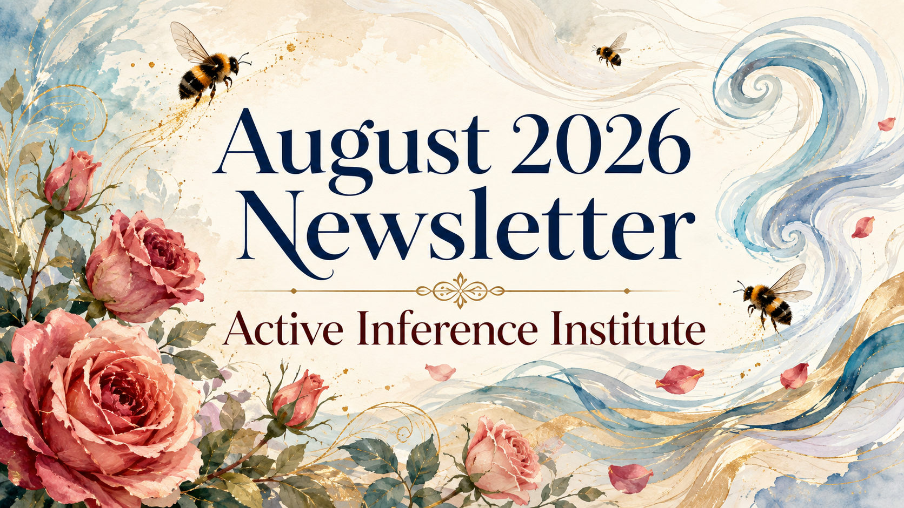

フルイssue
ニュースレター コンテンツ
このページはアーカイブされたニュースレターのテキスト、公開リンクとメディアを保存します。
Active Inference Education Participation Research Newsletter
- Published
- Format
- Newsletter

As always — complete the Measurement form to have your research, education, and work updates included in a future newsletter. Please include links to your work, and aim to make the first paragraph short & clear so that we can include it easily in newsletter.
Big thanks to the many of you — Fellows , interns, and others in the ecosystem — who are doing awesome work and submitting updates!
Check out our new public site at https://activeinference.institute/ - This is hosted via Github pages, here is the underlying repo. We’d appreciate your feedback on functionality, and sharing the site around to some fresh eyes who might not know about Active Inference or the Institute.
Updates from the Institute
- The 6th Applied Active Inference Symposium will be held November 12-13, 2026. Here is the link to register as a participant (online, free). We are also seeking Presenters (direct link to submit) and Sponsors (more information). Contact us with any ideas or questions. How can we make this the biggest and most impactful Applied Active Inference Symposium yet, and what would be of Pragmatic and Epistemic value for you?
- Open Earth Foundation and the Active Inference Institute are excited to announce our new project NEST (Nested Energy System Transitions), funded as one of the inaugural Schmidt Sciences Decarbonization and Energy Virtual Institute projects! We will be exploring how nested models, agentic orchestration, probabilistic model wrapping, and Active Inference can coordinate energy models across scales. We will continue work with Generalized Notation Notation, GEO-INFER, and other techniques to accomplish these aims. The NEST Consortium consists of: Open Earth Foundation, IIASA, CEU, Imperial College London, and the Active Inference Institute, with pilot partners C40 Cities and ICLEI. More information can be found in the LinkedIn announcement and in future Institute newsletters!
- The Fundamentals of Active Inference textbook group continues to meet weekly. All details and registration form here, the playlist of all meeting recordings is here, our interactive learning document is here, and all open source code examples are here. The textbook is “Fundamentals of Active Inference: Principles, Algorithms, and Applications of the Free Energy Principle for Engineers” by Sanjeev V. Namjoshi (2026). Great work to Andrew Pashea and Fraser Paterson for their stalwart facilitation!
Updates from Research Fellows
- Post-Control Script-Societies — Mahault Albarracin (AII Research Fellow) and Sonia de Jager published “Post-Control Script-Societies: Social Power Dynamics Through Attention Mechanisms as Active Inference” in Topoi (open access). The paper reframes social power through Active Inference, arguing power operates through shared cultural “scripts” that modulate attention (precision-weighting) across individuals and groups.
- The Embodied Hijack — Sheila Macrine (UMass Dartmouth & AII Research Fellow) published “The Embodied Hijack: when Pleistocene minds meet disembodied artificial intelligence” in Frontiers in Psychology. She argues that people’s tendency to attribute agency and understanding to chatbots isn’t naive confusion but the predictable output of agency-detection systems evolved for embodied, self-maintaining agents — misfiring in a structured way she calls the Embodied Hijack.
Updates from the Active Inference Ecosystem
- Renormalising Generative Models — Andrew Pashea, Karl Friston (AII Scientific Advisory Board) and co-authors released “Renormalising Generative Models for Active Inference”, and will also present this work at IWAI 2026. Renormalising Generative Models let discrete active-inference models scale to rich domains by composing models across levels; the paper provides a derivation-first account with an independently verified implementation.
- Psychedelics Align Brain Activity with Context — Adeel Razi (Monash University, AII Scientific Advisory Board) and colleagues published “Psychedelics align brain activity with context” in Nature. Scanning 62 adults on psilocybin, they found reduced eyes-open/eyes-closed differentiation and an “embeddedness” signature linked to meaningful experience and next-day benefit. See the Paper, Paper explainer, Data descriptor, TAVRNN model paper, Open dataset, and Code.
- Artificial Sentience — Cleber Gomes reports how standard agentic AI reads exact absolute (X, Y, Z) coordinates, which breaks down for Active Inference agents acting to minimize Variational Free Energy. Shifting an emotion-driven agent’s neural network from inferring absolute position to predicting relative, velocity-based updates fixed training instability and produced more realistic emotional dynamics in an agent chasing an evasive target. For more information see the full blog post.
- Active Skillference — Daniel Friedman (Officer) reports the open source release of Active Skillference: a provenance-bound curriculum-generation and “SkillTree”-export system for teaching Active Inference and the Free Energy Principle — a validated prerequisite graph of 630 skills across 111 subjects, with a computational claim registry ensuring every number shown to a learner is backed by a tested kernel. For more information see the Zenodo record and GitHub repo.
- Active Inference Journal — The Active Inference Journal’s GitHub repo now has a live Pages site: an interactive archive of 573 video items (557 diarized transcripts, 13 translated) across 19 series, including the Applied Active Inference Symposium archives, BookStream, Courses, and Livestream. GitHub repo and interactive Pages site.
- In the GEO-INFER project, Bert Berkers has mapped clusters of multi-modal geospatial embeddings onto a voxelized 3D city map of Rotterdam.
- If you would like to help make audio-visual content with the Institute, there are many roles available, for example to help plan livestreams. See this video for more information.
New projects in the Active Inference Ecosystem
Several new Ecosystem projects have been listed this month:
- cpomdp — Daniel Corva writes: cpomdp is a Python library that brings active inference to continuous state spaces, filling a gap left by pymdp (which only handles discrete spaces) so researchers can build custom continuous generative models without proprietary tools like MATLAB; it centers on a linear-Gaussian formulation with exact Kalman filtering, where an agent perceives (updates beliefs from observations) and acts (samples actions toward preferred states). Recently, cpomdp set out to make its claims about active inference agents checkable rather than asserted. Three pieces of that infrastructure have now landed. warrantlib (PyPI, v0.3.0) is a standalone package for labelling what a numerical check actually established, with provenance back to the commit that set the bar. An exact Bayes reference filter now measures, in nats, what a Gaussian agent loses when observation noise depends on state, replacing an assumption with a number. And the simulation harness now separates the world from the agent’s model of it, so model misspecification is measured instead of being zero by construction. The harness makes the three terms of the Scored Free Energy separately measurable. Together these are the instrument for the Certifiable Active Inference programme, whose first paper is on arXiv (2607.20306) currently submitted to Neural Computation. More information at Repo.
- Coherence Density — Travis James is seeking collaborators to run python script on open source Temple University EEG ictal and pre-ictal window data using my heuristic “Coherence Density” mathematical formula. For more information seeA Cross-Disciplinary Definition of Coherence and Coherence Density: An Operational Framework for Detecting Early Functional Degradation in Complex Adaptive Systems
- Cognitive Somatic Regulator — Colleen Pridemore — The project investigates somatic regulation architectures, ethical threshold mechanisms, and adaptive cognitive-affective dynamics within open cognitive frameworks.
- Regime-Dependent Active Inference— Dr. Martin Bello — this project explores how an agent’s generative model, beliefs, and policies can shift across dynamical regimes. The GitHub repo hosts technical memoranda (incl. a memoranda directory with 4 articles) as the theory and implementation develop. For more information see the GitHub repo.
- Ed4All — Matthew D Murphy — This “Active Inference for Grounded Educational Knowledge Environments” is an open-source project that has reached a working-prototype and initial-evaluation stage. It addresses the problem of educational AI systems generating unsupported or fabricated answers by treating a course as a bounded, queryable knowledge environment rather than an undifferentiated document collection: the system retrieves relevant course evidence, generates grounded responses, cites its sources, and declines to answer when the course material can’t support a response. The project frames this as a practical testbed for Active Inference concepts (hidden states like learner understanding or misconceptions, observations like questions and retrieved passages, actions like answering/clarifying/refusing, and belief updating).
This page gives a 1-page summary of the structure of the Institute — a helpful entry point for those who are new, or learning about our form and functions.
Here is the entry point for 2026, and ways to get involved with the Institute and Ecosystem this year. Donate to the Institute to support our impact and sustainability. Contact us with other philanthropic and grant ideas.
Get in touch if you have general or specific feedback, ideas, or questions for the Institute.
More to come! Stay tuned via the newsletter and Discord.
Officers, Alexandra & Daniel
👣👣👣